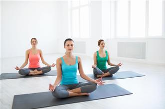
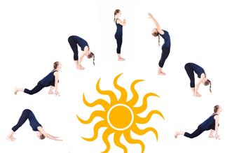
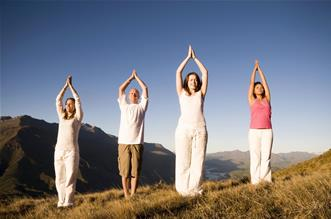
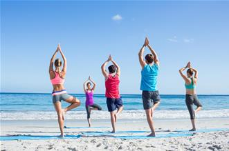
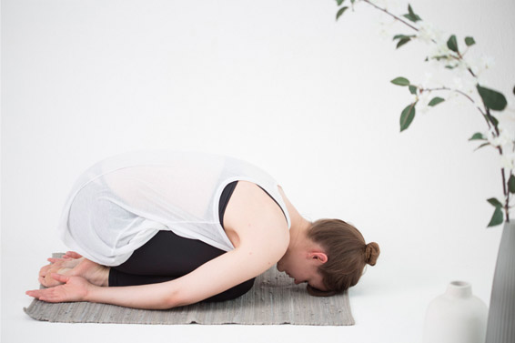
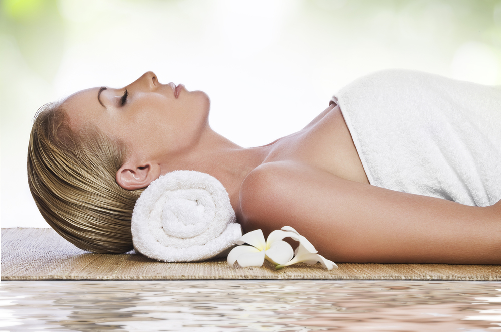

Les postures de base
La posture du Lotus

La posture du Lotus est une posture qui débute souvent une séance de Yoga. Elle permet de se concentrer sur la respiration et d’apprendre à respirer calmement et profondément. Par ailleurs, c’est une posture de détente pour tout le corps.
En position assise sur le sol, les jambes allongées devant, suivez ensuite les étapes :
- Pliez vos genoux et placez les pieds au-dessous de la jambe opposée
- Autant que possible, ne forcez pas, ramenez les genoux vers le sol
- Gardez le dos bien droit, détendez les épaules et le bassin, ouvrez bien la poitrine
- Ramenez les mains au niveau du plexus solaire en prière soit au niveau des genoux, paumes tournées vers le haut.
Respirez profondément en fermant les yeux ; détendez-vous et concentrez-vous uniquement sur votre posture et vos respirations.
Cette posture peut être pratiquée à toutes les séances et vous pourrez y rester pendant plusieurs minutes. Alternez le croisement des pieds et des jambes si vous restez longtemps sur cette posture.
La salutation au soleil

La salutation au soleil est un enchaînement de mouvements qui exige beaucoup de concentration et un bon rythme de respiration. Elle est souvent effectuée en début de séance pour échauffer le corps.
La salutation au soleil est conseillée au matin, pour saluer et remercier le soleil, et s’ouvrir à tous ses bienfaits. Les postures qui composent la Salutation au soleil permettent de favoriser une meilleure circulation sanguine, un bon étirement et assouplissement des muscles et un bon renforcement des articulations.
La Salutation au soleil démontre plusieurs variantes. Nous vous montrons ici une variation plus simple à réaliser. Suivez toutes les étapes.
Tournez-vous vers l’Est, en position debout, gardez le dos bien droit, rejoignez les mains en prière au niveau du plexus solaire. Préparez la posture de la Montagne.
La posture de la Montagne
Tout en inspirant, montez les bras vers le ciel, bien tendues et effectuez la posture de la montagne. Restez dans cette posture pendant quelques secondes puis enchaînez avec la posture de la roue.
La posture de la roue
Inspirez fortement et ramenez vos bras tendus vers le ciel,
Cambrez vers l'arrière et étirez-vous le plus loin possible mais ne forcez pas.
La posture de la Pince debout
- Tout en expirant, descendez doucement le torse vers le bas, laissez les jambes bien tendues.
- Collez le visage au niveau des jambes et attrapez l'arrière des chevilles avec les mains.
- Restez quelques secondes dans cette posture et enchaînez avec la posture de la révérence.
La posture de la révérence
- Descendez doucement les fesses, prenez appui sur les genoux au sol et asseyez-vous sur les talons.
- Allongez les bras le long du corps et tendez-bien les jambes et les pieds.
- En inspirant, soulevez les fesses et en prenant appui sur le front au sol, roulez la tête vers l’avant jusqu’à ce que les cuisses et les jambes forment un angle droit.
- Restez quelques secondes sur cette posture.
- Ramenez doucement les fessiers vers le bas (sur les talons), tout en roulant sur le front mais ne décollez pas la tête du sol.
- Détendez-vous sur cette posture. Puis enchaînez avec la posture du chien.
La posture du chien
- A partir de la posture de la révérence, mettez-vous à 4 pattes, les mains bien tendues sous les épaules, les genoux bien alignés aux hanches. Posez les mains bien à plats sur le sol, les doigts bien ouverts.
- En inspirant, poussez sur les orteils et levez les jambes et les talons.
- Poussez bien vos fessiers et votre bassin vers le haut et tendez les jambes.
- En expirant, ramenez la tête vers le bas et étendez la colonne vertébrale en déplaçant petit à petit vos mains vers l’avant.
- Restez dans cette posture pendant quelques secondes et enchaînez avec la posture de la planche
La posture de la planche
- Ramenez votre corps vers le bas et mettez-vous à plat ventre sur le tapis, les mains sous les épaules.
- Gardez le dos bien droit.
- En inspirant, surélevez doucement la tête puis poussez sur vos mains et tendez les bras.
- Décollez votre corps du sol en prenant appui sur les pointes des pieds et les mains. Regardez vers le haut et contractez vos fessiers.
- Gardez les jambes bien tendues et prenez appui sur les pointes des pieds.
- Restez quelques secondes dans cette posture puis revenez vers le bas sur le tapis.
- Tout en expirant, contractez vos abdominaux, poussez sur vos mains et revenez sur la posture du chien.
Pour terminer l'enchaînement,
- Lors d’une inspiration, ramenez votre pied gauche entre vos mains tout en gardant la jambe droite bien tendue, regardez devant vous, vous êtes tourné vers le soleil.
- Restez quelques secondes dans cette posture puis changez de jambes.
- Ramenez ensuite les 2 pieds entre vos mains, vous êtes en position accroupie.
- En inspiration, remontez tout doucement la colonne vertébrale en poussant sur vos pieds et vos jambes. Vous retrouvez là la posture de la pince debout.
- Déroulez doucement la colonne vertébrale vers le haut et retrouvez la posture de la Montagne.
- Ramenez les bras au niveau du plexus solaire en prière.
Voilà, vous avez fini la salutation au soleil. Faites-le tous les matins pour démarrer une meilleure journée !
La posture de la Montagne

La posture de la Montagne travaille l’équilibre et habitue le corps à se tenir droit. Par ailleurs, la posture de la Montagne est souvent la position initiale pour presque toutes les postures debout en yoga.
En position debout,
- Joignez les pieds, les orteils doivent se toucher mais les talons sont légèrement écartés.
- Levez tous les orteils et laissez-les se déposer doucement sur le sol, l’un après l’autre.
- Balancez votre hanche de gauche à droite puis d’avant en arrière pour trouver l’équilibre, rentrez les abdos, puis immobilisez-vous sur une position neutre.
- Gardez le dos bien droit, détendez les épaules, allongez la nuque et reculez légèrement le menton vers le thorax.
- Laissez les bras allongées le long du corps, allongez les doigts, les paumes sont tournées vers l’avant. Soit, levez les bras vers le haut et joignez les mains vers le ciel.
Respirez doucement et profondément. Restez dans cette posture pendant 30 secondes à 1 minute.
La posture de l'arbre

L’arbre est une posture simple, mais qui exige un minimum de concentration car elle permet de travailler l’équilibre.
En position debout, gardez le dos et la nuque bien droits.
- Ramenez les mains en prière au niveau du plexus solaire (ou tendez les bras vers le haut et joignez les mains).
- Ramenez les mains en prière au niveau du plexus solaire (ou tendez les bras vers le haut et joignez les mains).
- Pliez doucement le genou droit et appuyer le pied droit bien à plat sur la cuisse gauche. Aidez-vous de votre main gauche si besoin.
- Regardez devant vous et fixez un point en travaillant votre concentration et votre équilibre.
Ouvrez bien la poitrine et respirez profondément. Restez dans cette posture pendant 30 secondes à 1 minute.
Changez de jambes et recommencez la même posture avec l’autre côté.
La posture de l'Enfant

La posture de l’Enfant est essentiellement effectuée pour se détendre et pour étirer la colonne dorsale.
Mettez-vous à genoux au sol puis étape par étape, suivez les mouvements :
- Joignez bien les jambes et faites que les gros orteils se touchent.
- Descendez vers le bas de façon à asseoir les fesses sur les talons et là, écartez légèrement les genoux de la largeur des hanches pour que la poitrine puisse coller sur les genoux.
- Appuyez le front sur le sol, ramenez les bras vers l’arrière en mettant les mains au niveau des pieds, les paumes tournées vers le haut.
Restez dans cette posture pendant 30 secondes à 1 minute et détendez vous.
La relaxation

La relaxation est souvent une posture qui termine la séance. Mais elle peut être effectuée en début de séance pour détendre les muscles et préparer le corps aux différentes postures. On parle également de relaxation intermédiaire lorsque cette posture est effectuée entre deux postures pour se détendre et ressentir les bienfaits de la posture effectuée auparavant.
Allongez-vous sur le dos, les jambes légèrement écartées, les bras tendues légèrement éloignées du corps et les paumes tournées vers le haut. Contractez les abdos et respirez.
Pendant cette posture de détente, concentrez-vous sur des respirations profondes.